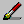
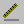
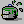
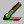
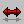
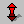
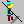
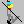
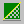

The various drawing tools appear in the toolbar at the top of the editor.
The foreground and background colours used for drawing are set by left and right-clicking on the palette in the left-hand pane.
 This lets you draw freehand onto your canvas with the foreground colour. The current pen size can be set on the left-hand pane.
 This lets you draw lines with the current foreground color and pen size.
 This flood fills an area of your canvas with the foreground colour.
 This lets you draw over sections of your canvas, replacing colours that match the background colour with the foreground colour. By double clicking into the image, all colours that match the background color are replaced.
  You can flip the canvas horizontally or vertically with this tool.
 This inverts the colours on your canvas.
 This converts your image to greyscale.
Six different shape tools are available: rectangle, ellipse and rounded rectangle. Each can be hollow or solid.
Normally the shape will be anchored to the top-left or bottom-right. If you hold down SHIFT while drawing, the shape will be centered around the point you clicked.
 The dithering button lets you draw with both the foreground and background colour, where normally only the foreground colour would be used. Other than the obvious uses, one thing this lets you do is easily make a view that is half transparent, by specifying one of the colours as being the transparent colour (this only applies to views and cursors).